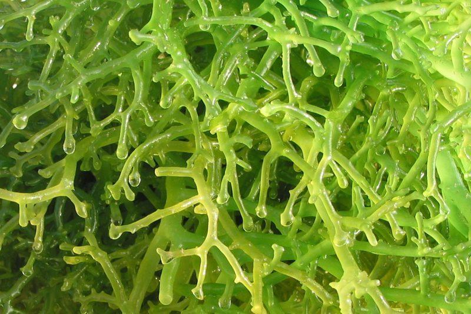

Lamun vs Rumput Laut
Meskipun sering tertukar, keduanya adalah organisme yang sangat berbeda secara biologis.

Lamun (Seagrass)
- Memiliki akar, batang, & daun sejati
- Berbiak dengan bunga & biji
- Menyerap nutrisi melalui akar

Rumput Laut (Seaweed)
- Tidak punya akar sejati (Thallus)
- Berbiak dengan spora
- Menyerap nutrisi dari air langsung